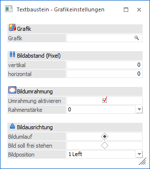
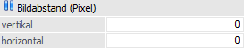
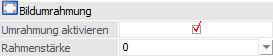
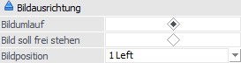
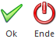

Durch die Anwahl des Buttons "Grafik" im Programm Textbausteine wird das Fenster "Textbaustein - Grafikeinstellungen" geöffnet. Hierüber ist es möglich Grafiken bzw. Bilder in den Textbaustein einzufügen und zu formatieren.

Folgende Einstellungen stehen zur Verfügung:
Grafik
Ø Grafik
An dieser Stelle wird hinterlegt, welche Grafik-Datei angezeigt werden soll. Hierbei stehen all jene Grafiken zur Verfügung, welche in der WinLine Datenbank gespeichert wurden (ein Verweis auf eine Grafikdatei, die sich auf irgend einer Festplatte befindet, ist nicht möglich).
Bildabstand (Pixel)

Ø vertikal
Hier kann der vertikale Abstand (oben und unten) zum Text eingegeben werden. Bleibt hier der Wert auf 0 und das Bild wird mitten mit Text eingefügt, dann "klebt" der Text am Bild.
Ø horizontal
Hier kann der horizontale Abstand (links und rechts) zum Text eingegeben werden. Bleibt hier der Wert auf 0 und das Bild wird mitten mit Text eingefügt, dann "klebt" der Text am Bild.
Bildumrahmung

Ø Umrahmung aktivieren / Rahmenstärke
Wird diese Option aktiviert, dann kann aus der Auswahlliste "Rahmenstärke" die Stärke der Linie ausgesucht werden, mit welcher das Bild umgeben werden soll.
Bildausrichtung

Ø Bildumlauf / Bild soll frei stehen
Hier kann entschieden werden wie der Text, der ggfs. um die Grafik platziert wurde, angezeigt werden soll.
ü Bildumlauf
Wird die Option auf
"Bildumlauf" gestellt, dann wird der Text gemäß den Einstellungen "Bildabstand
(Pixel)" um die Grafik herum ausgegeben.
ü Bild soll frei stehen
Wird die
Option auf "Bild soll frei stehen" gestellt, dann wird der Text nur oberhalb
bzw. unterhalb der Grafik ausgegeben.
Ø Bildposition:
Hier kann entschieden werden, wie die Grafik angeordnet werden soll, wobei es von der Einstellung "Bildausrichtung" abhängt, welche Optionen zur Verfügung stehen.
ü Bildausrichtung
"Bildumlauf"
Hier kann nur die Option "Left" oder "Right" ausgewählt werden,
wobei als rechter Rand immer der längste Text herangezogen wird.
ü Bildausrichtung "Bild soll frei
stehen"
Hier kann zwischen den Optionen "Left", "Right" und "Center"
ausgewählt werden, wobei für die Berechnung der Bildposition immer der längste
Text herangezogen wird.
Buttons

Ø Ok
Durch Drücken des Buttons "Ok" bzw. der Taste F5 werden die Einstellungen gespeichert und in den Textbaustein übernommen. Als Ergebnis wird ein "Link" angezeigt (der Name der Grafik wird blau und unterstrichen dargestellt). Wenn noch Änderungen zu dieser Grafik vorgenommen werden sollen, so kann das Fenster durch Anklicken des Links wieder geöffnet werden.
Ø Ende
Durch Drücken des Buttons "Ende" bzw. der Taste ESC wird das Fenster geschlossen und alle nicht gespeicherten Eingaben verworfen.